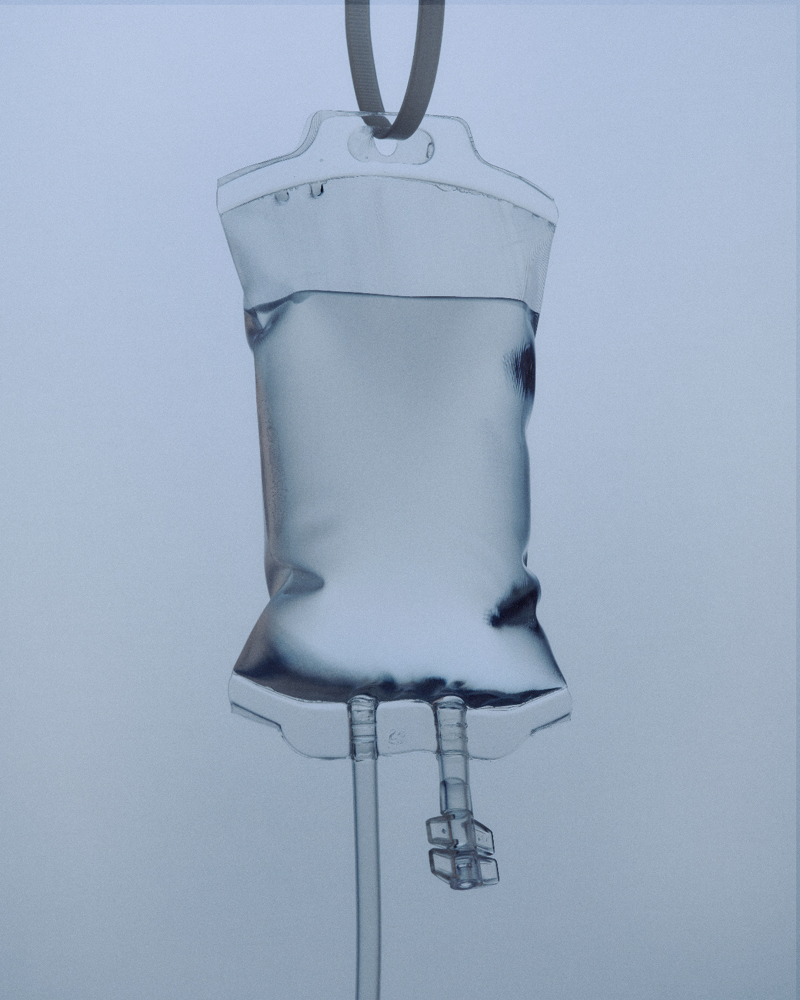

Medicine
The full Doctor of Medicine programme, combining pre-clinical sciences with hospital-based clinical training. Graduates are eligible to pursue registration and specialisation across Europe.

Accredited, English-taught degrees at established Bulgarian universities, recognised across Europe and beyond.
Whichever programme you choose, the MedPilot journey is the same: honest eligibility advice, full application support and help long after you arrive.
The full Doctor of Medicine programme, combining pre-clinical sciences with hospital-based clinical training. Graduates are eligible to pursue registration and specialisation across Europe.
A hands-on Doctor of Dental Medicine degree with early clinical exposure and modern facilities, preparing you for practice or further specialisation.
A Master of Pharmacy covering pharmaceutical sciences, clinical pharmacy and industry placements, opening doors to community, hospital and industrial roles.

A full veterinary medicine degree with clinical rotations across small and large animal practice, recognised for work throughout the European Union.
Most Bulgarian medical universities assess applicants with entrance exams in biology and chemistry. They are very passable with the right preparation.
Our Standard and Premium packages include entrance exam guidance: what each university tests, the format you'll face, past-style questions and a preparation plan built around your timeline. Your case manager registers you for the exam and makes sure nothing is left to chance on the day. To qualify, your school grades in the relevant subjects generally need to average at least 62 percent of the maximum in your country's grading system; we confirm exactly where you stand in your free eligibility check. Some universities also ask for an English test.
A Master's degree in Medicine from an EU member state, at a fraction of Western European tuition, in cities where student life is genuinely affordable.
Each has its own character, entrance exam format and city. Your free consultation helps you choose with confidence; here is the map we work from.
Sofia
The country's leading medical university, in the heart of the capital, offering Medicine, Dentistry and Pharmacy in English.
Sofia
One of Bulgaria's highest-ranked universities, with an English-taught Medicine programme in the capital.
Plovdiv
A modern campus with strong research centres, in one of Europe's oldest cities and a favourite with UK students.
Varna
Seaside city living with excellent facilities and an international student community on the Black Sea coast.
Pleven
Unusual among Bulgarian universities: lectures begin in February, which suits students who miss the autumn intake.
Stara Zagora
The most affordable place in Bulgaria to study Medicine, in a historic town with low living costs.
Burgas
Bulgaria's newest English-taught Medicine programme, in a relaxed city on the southern Black Sea coast.
Your free consultation includes career guidance and a full eligibility assessment across all four programmes.
Book your free consultation